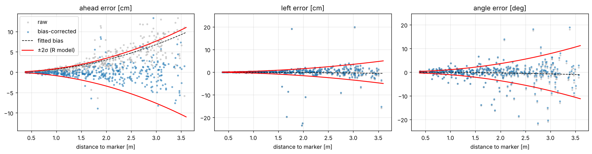
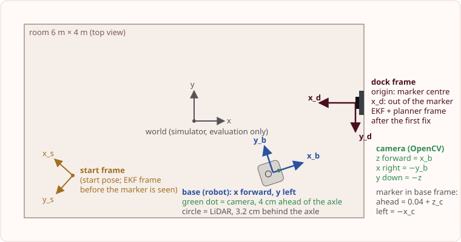
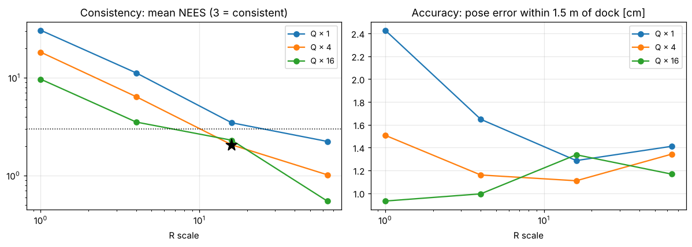
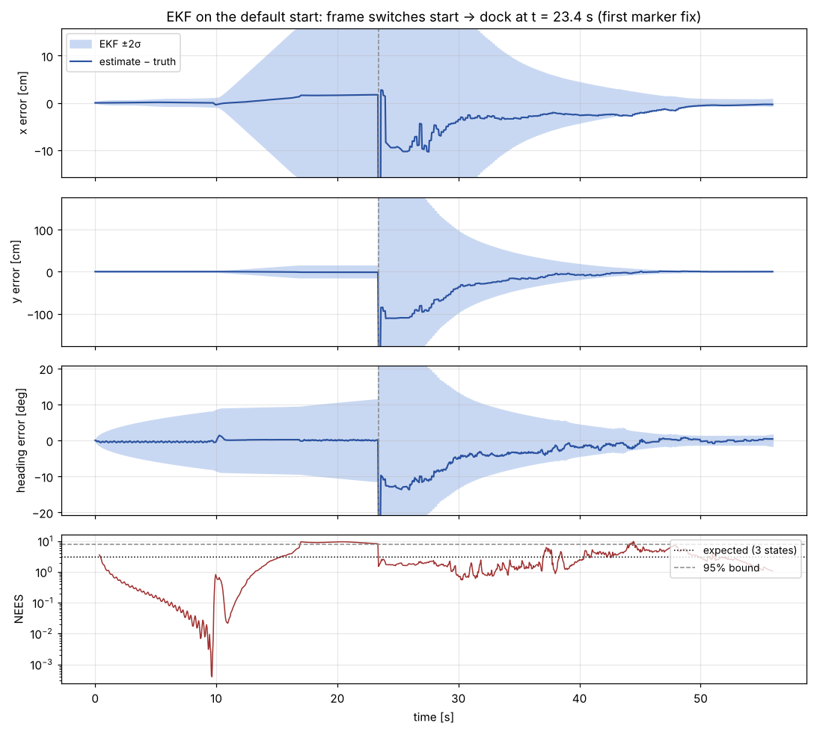
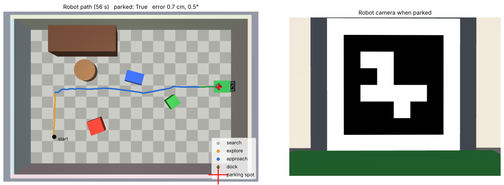

Overview
A simulated TurtleBot3 Burger (MuJoCo) starts somewhere in a 6 m × 4 m room with three boxes, a sofa and a coffee table, often facing away from the charging dock. It has to find the dock, which is marked with an ArUco tag (DICT_4X4_50, id 7, 18 cm), and park 0.35 m in front of it, square-on. It only uses its own sensors: a 640×480 camera, a 360° LiDAR, wheel encoders and a gyro.
Pipeline (20 Hz): sense → EKF (odometry prediction, ArUco pose update) → planner (search, explore, approach, align, dock, square-up) → LQR line-tracking controller → wheel speeds.
Ground truth is used for evaluation only. The robot code (src/estimator.py, planner.py, control.py, marker.py, model.py) never imports the simulator's true pose. Ground truth lives in src/judge.py and eval/ and is only used to score runs and draw the "truth" lines in the plots. The controller acts on the EKF estimate.
Run it
- Colab (easiest): open
notebooks/run_docking.ipynband choose Runtime → Run all. It clones this repository, installs everything, and runs every stage below with plots and videos. The free CPU runtime is enough. - Locally (Python 3.10+):
pip install -r requirements.txt, then from the repository root:python -m eval.run_episode: one scored docking runpython -m eval.make_video push: video with estimate and uncertainty (nominal,push,occlusion, …)python -m eval.run_batch: the full robustness study (120 runs, about 20 minutes)python -m eval.calibrate_camera,eval.characterise_camera,eval.characterise_odometry,eval.tune_ekf: regenerate the calibration and noise parameters inmodels/pytest tests: unit tests
Repository layout: src/ robot code and simulator (world.py); eval/ evaluation, ground truth and plots; models/ calibration and noise parameters the robot loads; tests/; notebooks/.
A. Model
Kinematic model (unicycle). State s = [x, y, θ], input u = [v, ω]:
ẋ = v cosθ, ẏ = v sinθ, θ̇ = ω, with v = r(ωR + ωL)/2, ω = r(ωR − ωL)/b
r = 0.033 m and b = 0.160 m (TurtleBot3 Burger URDF). Assumptions: flat floor, wheels roll without slipping, and the wheel-speed controllers track the commanded (v, ω) within the simulator's 1 m/s² and 6 rad/s² acceleration limits. The no-slip assumption is the one that breaks: the wheels slip when turning on the spot and when the robot is pushed, so the EKF takes its rotation from the gyro, not the wheels.
Discrete odometry model (EKF prediction, dt = 0.05 s): Δs from the encoders, Δθ from the gyro;
xk+1 = xk + Δs cos(θk + Δθ/2), yk+1 = yk + Δs sin(θk + Δθ/2), θk+1 = θk + Δθ.
Linearised tracking-error model (LQR design). For a straight reference line at speed v, with sideways error ey and heading error eθ (small angles):
ė = A e + B ω, A = [[0, v], [0, 0]], B = [[0], [1]].
Measurement model (camera). In the dock frame the marker's pose is known, (0, 0, 0), so the camera's measurement of the marker in the robot frame is
h(s) = [−x cosθ − y sinθ, x sinθ − y cosθ, −θ] (ahead, left, facing angle). Jacobians are in src/model.py and checked against finite differences.
Analysis (src/model.analysis()) | Rank | Meaning |
|---|---|---|
| Pose-error model linearised about a reference moving at vr = 0.15 m/s | 3 / 3 | Controllable while moving |
| Same model at vr = 0 | 2 / 3 | The sideways error can't be corrected on the spot (non-holonomic). The controller never relies on it: it turns on the spot first, then tracks a line while moving. |
| Lateral model (ey, eθ) for v > 0 | 2 / 2 | Controllable, so LQR applies |
| Pose from one marker measurement (H at a pose near the dock) | 3 / 3 | Fully observable whenever the marker is in view |
| Pose from odometry only | 0 / 3 | Not observable: the error grows without bound until the marker is seen, and again whenever it leaves the view |
B. Sensing: calibration, noise and frames
Camera calibration. We calibrated the robot's camera the way you would a real Pi camera: a 9×6 checkerboard (25 mm squares) at 40 random poses in a MuJoCo scene with the same camera, corners found with cv2.findChessboardCorners plus sub-pixel refinement, and solved with cv2.calibrateCamera (Zhang's method). Result: fx = 530.34, fy = 530.36, c = (319.74, 239.65), RMS reprojection error 0.06 px; the focal length is within 0.02% of the simulator's datasheet value. The robot loads this matrix and the distortion coefficients from models/camera_calibration.json.
Marker measurement noise. We placed the robot at 400 known poses (0.4–3.6 m, ±50° around the marker, ±22° off-axis) and compared the ArUco pose (solvePnP, IPPE-square) with the truth:

- A distance bias we diagnosed and corrected. The camera overestimates distance by about 0.0075·d² (+7 cm at 3 m). The d² shape points to the corner detector placing the corners about 0.3 px inside the true edge, which makes the tag look smaller. The EKF subtracts this bias from every measurement.
- R grows with distance: σ(d) = a + b·d², with b = 0.0042 (ahead), 0.0019 (left) [m/m²] and a = 0.002 rad, b = 0.0074 rad/m² (angle), floored at 3 mm and 0.5°.
- Outliers: 4% of angle readings are off by more than 15°. This is the known pose-flip ambiguity of a flat marker, so the EKF rejects them with a χ² gate rather than inflating R for every reading.
- Odometry: over 3,778 steps of real docking runs, the per-step error is 0.2 mm in distance and about 7% of each turn (plus a 0.07° floor) in heading (
models/odometry_noise.json).
Frames. Every quantity is converted explicitly. The camera measurement goes camera (OpenCV) → base → dock frame (EKF state) → planner and controller errors.

C. Estimation: EKF
- State: robot pose
[x, y, θ]. Predict every 0.05 s with the odometry model:P ← F P Fᵀ + G Q Gᵀ, where Q comes from the odometry noise model above. - Update on every new camera frame (5 Hz) showing the marker: bias-corrected z, innovation ν = z − h(s),
S = H P Hᵀ + R(d). Readings with Mahalanobis distance νᵀS⁻¹ν > 11.34 (99% χ², 3 dof) are rejected. The covariance update uses the Joseph form. - Frames: before the marker is seen, the filter runs in the start frame with prediction only, so P grows. The first sighting initialises the pose in the dock frame directly from that measurement (P mapped from R through the inverse measurement model). If 6 readings in a row are rejected, the filter assumes that fix was wrong and re-initialises.
- Tuning: with the measured Q and R, the filter was overconfident (NEES around 30, against an expected 3). The cause is that both error sources are correlated over time: as the robot creeps forward, the tag's corners snap to the same pixels for several frames, and wheel slip lasts several steps. The EKF treats each frame as independent new evidence. We inflated both Q and R and picked the scales by a consistency sweep (
eval/tune_ekf.py, 12 settings × 5 runs): Q × 4, R × 16. Every setting parked all 5 runs, so the choice is about honest uncertainty: this is the most accurate setting whose NEES stays at or below 3.


D. Control: planner and LQR
Planner (src/planner.py): search (spin on the spot) → explore (drive to an open, unvisited spot picked from the LiDAR) → approach a point 0.8 m in front of the dock → align → dock along the dock's centre line → square-up. Obstacle avoidance is local: each step checks a 0.4 m wide, 0.7 m long corridor towards the target in the LiDAR scan and, if it's blocked, steers to the nearest clear direction (5° steps).
LQR line tracker (src/control.py), on the EKF estimate: ω = −K(v) [ey, eθ]. Weights by Bryson's rule: Q = diag(1/0.05², 1/(10°)²), R = 1/(1 rad/s)², meaning "5 cm sideways and 10° of heading error are worth 1 rad/s of turning". Because the model depends on v, K is gain-scheduled (Riccati solved over a table of v from 0.02 to 0.22 m/s). Forward speed is v = min(vmax, 0.8·distance left)·cos eθ, and turns on the spot use the scalar LQR gain Kθ = 5.73.
| v [m/s] | K = [ky, kθ] | Closed-loop poles [1/s] |
|---|---|---|
| 0.02 (final creep) | [20.0, 5.80] | −0.07, −5.73 |
| 0.12 | [20.0, 6.13] | −0.42, −5.71 |
| 0.20 | [20.0, 6.39] | −0.70, −5.69 |
The slow pole is about −3.5·v: at docking speed, sideways error decays with a time constant of up to 14 s. In early tests this left the robot parked 5.3° crooked (just over the 5° limit), because the tracker trades heading against the remaining sideways error. The square-up stage, an in-place turn that doesn't move the position, fixed it.
E. Results and robustness
Each condition: the same 20 start poses (7 hand-picked plus 13 random ones clear of obstacles). Disturbances are injected between the simulator and the robot (eval/run_batch.py); the robot code isn't told which condition it's in.
Parked = within 5 cm and 5° of the target pose. Estimate error = mean EKF position error once the robot is within 1.5 m of the dock, and at the final step. NEES = mean over the dock-frame part of each run (3 = consistent).
Videos. Left: overhead view (coloured line = true path, white = EKF estimate with its 2σ ellipse). Right: robot camera. Bottom: estimate error with the EKF's ±2σ band.

What the trials show
- Every run parked, with no collisions (__ALL_PARKED__ runs, __TOTAL_COLL__ collisions). The worst parking error in any condition was __WORST_POS__ cm, inside the 5 cm limit.
- Gyro noise and bias barely changed the result (mean parking error __GYRO_NOISE_POS__ cm), because the marker corrects the heading at 5 Hz. NEES rose to __GYRO_NOISE_NEES__: the 0.01 rad/s bias is not in our model, so the filter is slightly overconfident. Modelling the gyro bias as an extra EKF state would fix this.
- Camera pixel noise had almost no effect (__CAMERA_NOISE_POS__ cm). R was already inflated 16× for correlation, which also covers independent pixel noise.
- Push: the encoders don't see the shove (the wheels slip), so straight after it the camera disagrees with the prediction. On average __PUSH_REJ__ readings per run failed the χ² gate. In __PUSH_REINIT_RUNS__ of 20 runs, six rejections in a row triggered a re-fix from the marker, which is exactly what the re-initialisation rule is for. The robot still parked every time (mean __PUSH_POS__ cm). NEES __PUSH_NEES__ reflects the brief inconsistency.
- Combined (gyro noise + camera noise + push) gave the highest NEES (__COMBINED_NEES__): unmodelled gyro bias plus the push stack up. Parking was still unaffected (mean __COMBINED_POS__ cm, worst __COMBINED_POS_W__ cm).
- Camera blocked for 6 s near the dock: the filter runs on odometry alone, P grows, and the robot keeps driving on the prediction. When the marker returns, the filter re-converges. The near-dock estimate error rose from __NOMINAL_NEAR__ cm to __OCCLUSION_NEAR__ cm (the cost of 6 s of dead reckoning), but the final error is back to __OCCLUSION_FIN__ mm.
Limitations
- Local, reactive avoidance. There's no map or global planner, so paths aren't shortest and a dead end (U-shaped obstacle) could trap the robot. A LiDAR occupancy grid with A* would fix this.
- One landmark. The pose is only observable while the marker is in view; with the marker hidden, the error grows at the odometry rate (see the occlusion trials). More markers, or LiDAR scan matching against the walls, would keep it bounded.
- Correlated noise is handled by inflating Q and R, which makes the filter consistent but slower to react. An augmented state (e.g. a gyro-bias state), or decimating the camera updates, would be more principled.
- Simulation only. The camera has no blur, rolling shutter or lighting changes, so the real-world camera noise would be larger than our measured R.
Who did what
Anne
Student ID: 26202693
Set up the GitHub repository, the Colab environment and this project page. Ran, checked and uploaded the pipeline. Asked for and reviewed the AI-assisted estimator (EKF), camera calibration and sensor noise characterisation (src/estimator.py, src/marker.py, eval/calibrate_camera.py, eval/characterise_*.py). [Edit to match what you actually did.]
Vishnu
Student ID: 26224699
Built the simulation framework: the TurtleBot3 dock room scene and sensors (src/world.py, notebooks/turtlebot3_dock_scene.ipynb), the ground-truth judge and episode loop (src/judge.py, eval/run_episode.py, eval/truth_logger.py), and the marker detection test (tests/test_marker_detection.py). [Edit to match what you actually did.]
Generative AI declaration
Tool: Claude (Anthropic), used through claude.ai.
Purpose: Claude was used throughout the project. It wrote the code for the EKF (src/estimator.py), the state-space model and controllability/observability analysis (src/model.py), the planner (src/planner.py), the LQR controller (src/control.py), the camera calibration and noise characterisation, the EKF tuning sweep, the robustness study, the video and plotting scripts, and the unit tests in tests/test_model_ekf.py. It also drafted the text of this page. We gave the task and requirements, ran and checked the code and results in Colab, and asked Claude to explain each design choice. All numbers and plots on this page were produced by running the code in this repository. [Edit to match how you actually used it.]